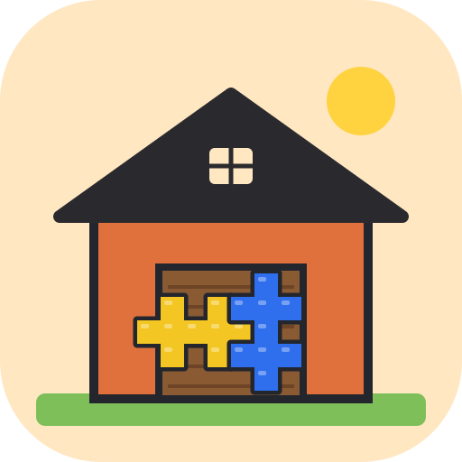

Små brikker. Store idéer.
Dit næste byggeri
Find brikkerne frem, og vælg hvordan I vil bygge.
Kopiér hvert link til den rigtige skærm. Links fastholder navnene og deres dele. Brug nye links på alle skærme, hvis I ændrer fordelingen.
Fra venstre mod højre · drej brikkerne som vist.
Tegn jeres egen model. Træk med fingeren for at lægge brikker. Gemte modeller kommer under „Egne".
Brug piletaster til at flytte markøren, mellemrum eller Enter til at lægge en brik og Delete til at fjerne. Tab forlader feltet.
Sværhedsgraden følger antallet af brikker.